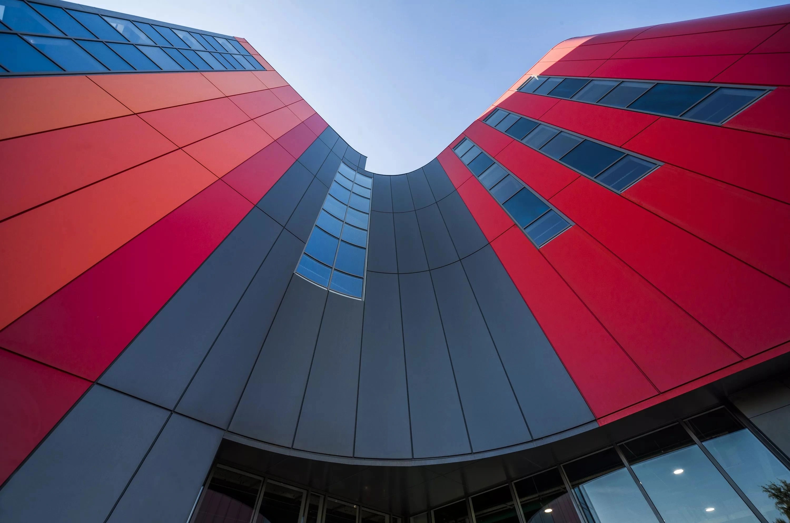

Привлечь внимание покупателей
0103Фасад читается издалека благодаря цвету, ритму панелей и акцентному входу, а в темное время контур здания выделяет LED-подсветка.
Торговый объект должен быть заметен с дороги и парковки и выдерживать постоянный поток покупателей, а сеть задает требования к облику
Фасады торговых зданий
Frontside изготавливает фасад под проект, будь то крупный комплекс или быстровозводимое торговое здание. В данном разделе собраны торговые центры, гипермаркеты, автосалоны и автосервисы, магазины и торговые павильоны.

Фасад читается издалека благодаря цвету, ритму панелей и акцентному входу, а в темное время контур здания выделяет LED-подсветка.
Фирменные цвета по RAL и профилирование панелей повторяются на объектах сети в разных городах, и покупатель узнает здание в любом из них.
Фасадную систему изготавливают под проект, привозят партиями в последовательности монтажа и сопровождают сборку шеф-монтажом Frontside.
В проектах раздела применялись системы FRONTTOP, FRONTBASE, UNIQUE и AESTHETIC. Подобрать решение под ваш объект помогут специалисты Frontside: оставьте заявку, и мы подготовим предварительное предложение.
Модульная система с теневым швом и невидимым креплением. Панели из стали и базальтовой ваты не требуют отделки, класс пожарной опасности — К0. Подходит для производств и ЦОДов.
ПодробнееБазовая система из стеновых и кровельных сэндвич-панелей длиной до 12,5 м. Готовая стена и кровля сразу закрывают тепловой контур, все узлы — в комплекте поставки.
ПодробнееТеневой шов и алюминиевый профиль на стыках панелей — меньше выступающих элементов на фасаде. Есть радиусные и двухцветные угловые модули, LED-подсветка в шве.
ПодробнееВертикальная система без видимого крепления и теневого шва: крепёж скрыт в замке панели, фасад получается гладким. Панели длиной до 12,5 м, закруглённые углы.
ПодробнееФасад торгового здания должен быть заметен с дороги и узнаваем по цветам сети. Из-за постоянного потока покупателей и разгрузки транспорта панели должны быть стойкими к нагрузкам, а поврежденный участок важно восстанавливать без остановки торговли. Вдобавок, быстровозводимое торговое здание требует поставки фасада к началу монтажа.
Для длинных однородных стен подходит FRONTBASE, поскольку ее панели не требуют внешней отделки. Выразительный облик дают вертикальная AESTHETIC и UNIQUE с декоративным теневым швом, гладкий фасад собирают из FRONTTOP. Вечером здание выделяет LED-подсветка, встроенная в панели на заводе.
Строительство торговых зданий ведет генподрядчик, а Frontside отвечает за фасад и подключается на любой стадии. Мы прорабатываем узлы, изготавливаем систему на основе сэндвич-панелей и привозим ее к началу монтажа, который проходит под нашим шеф-монтажом.
Поможем подобрать решение под архитектуру, сроки и эксплуатацию